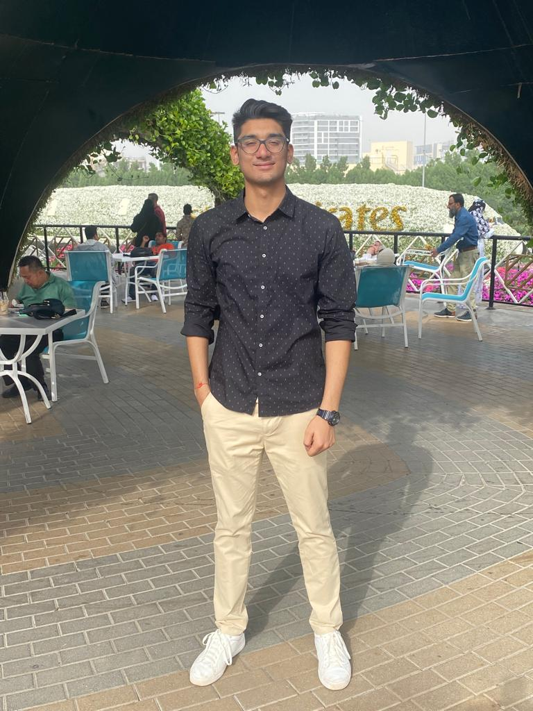

Divya Rajparia
Computer Science @ IIT Hyderabad | AI/ML Researcher | Healthcare Innovator

Hello! I'm Divya Rajparia, a passionate Computer Science student at IIT Hyderabad with a deep fascination for Machine Learning, Computer Vision, and AI applications in Healthcare. I believe technology has the power to transform lives and solve real-world challenges.
Currently, I'm working as a research intern at USC's Laboratory for Machine Learning, Health, and Biomedicine, focusing on enhancing tumor segmentation using synthetic data. My research journey spans from continual learning and vision transformers to developing innovative AI solutions for medical applications.
I am deeply driven by cool innovations in technology and aspire to develop meaningful solutions that tackle complex challenges in healthcare and beyond. Explore this website to learn more about my academic journey, research projects, and experiences in the exciting world of AI/ML.